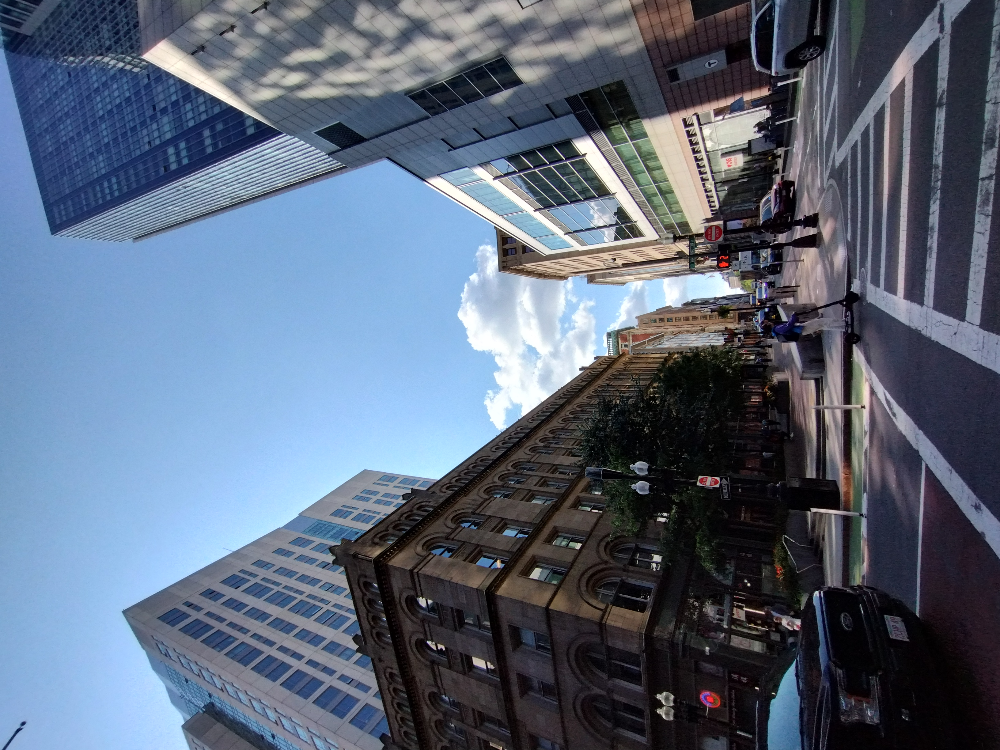

personal
Explore the world through my lens — a glimpse into the moments and perspectives that shape my journey.
The world through my eyes
Every photograph tells a unique story of discovery, wonder, and connection.
Musuem of Fine Arts, Boston üèõÔ∏è


Boston, USA üèôÔ∏è

The Prudential Building, viewed from Huntington Avenue.

The Boston Skyline, as viewed from The Longfellow Bridge

A misty morning in downtown Boston during the Farmer's Market.
Mystic Generating Station near Assembly in Boston, showcasing its iconic smokestacks and wind turbine under a picturesque sky.

A glimpse of Downtown Boston.

Artwork murals painted on the walls of a houses in Mission Main, Boston.

Murals adorning the walls of a house in Centre Street, Boston.

Trinity Church in Copley Square, Boston, seen from Clarendon Street.

A snowy day along Washington Street.
New York City, USA üóΩ

Soaring above the waters of New York City.

The suburbs of NYC, as viewed from an Etihad Airbus.
Northeastern University üéì


Indian Institute of Technology, Madras üéì

IIT-Madras Research Park building, captured in a photograph.

A view of the Mechanical Sciences Block at IIT Madras.
Incredible India üáÆüá≥

A tranquil dawn at Marina Beach.

A serene lake in Trivandrum, Kerala, with a lone fisherman silhouetted in the distance.
√ó